play
with the elements


 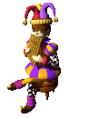
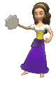
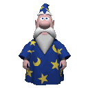
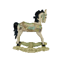
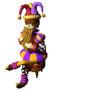
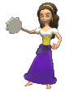
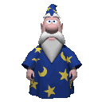
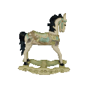
 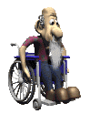
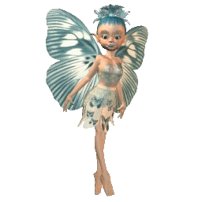
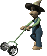
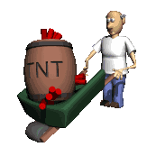
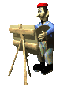
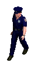
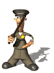
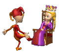
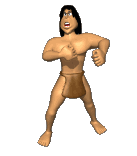
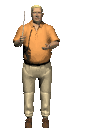
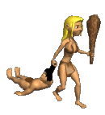
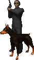
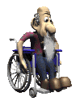
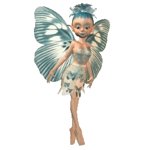
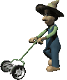
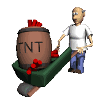
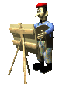
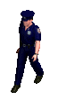
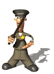
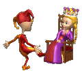
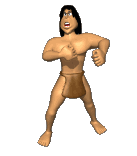
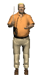
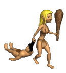
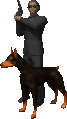

What is larp?
It’s difficult to provide a complete answer to this question as the histories, forms, and futures of the medium are divergent. LARP (Live Action Role Play) is semi-structured, improvisational theatre in the absence of an audience. The most often mentioned forerunners of role-playing games (RPGs) are probably Dungeons & Dragons (1974) and other tabletop games from the 1970s, which inspired players to create spontaneous stories until they were able to inhabit their characters and venture beyond of the proverbial basement. While some larping is consistent with the tradition of geeks slamming rubber swords into each other, other variations have developed at the same time. One of these variants is called Nordic larp since it originated in northern Europe. Nordic larp is the focus of this website. Nordic larps can borrow from many forms: historical reenactments, Gestalt therapy, dystopian simulations, complete abstractions, and more.
This definition is inspired by Elvia Wilk's speech: Paranormal Storytelling, in which she beautifully expands further upon these ideas.
Why larp?
We view the hyperrealistic depictions of a typical documentary format as punishment –think of a fairly accurate theatrical performance of the regular commute you make to work everyday. This documentary label –which commercial entertainers do not like– shows its characteristics in the most far-fetched world that the human imagines. In other words, in all of these fictional worlds, lies a taste for reality. This is the same logic that pulls the viewers of typical TV formats such as reality shows. So far fetched, yet full of documentary imagery in terms of presenting an accurate picture of the conditions under which they are created and the realities of a cutthroat society, where survival of the fittest and other such concepts are paramount…
In conclusion, larp: because it presents allegories of a sort of neoliberal natural state of being, not because they are connected to actual reality.
Faruk Farocki, in conversation with Hito Steyerl, explain this phenomena in their interview: “A Magical Imitation of Reality"
larp Safety
Numerous in-game safety measures have been designed in light of the possibility of emotionally
or even physically taxing content.While some examples—like inventively created methods of safely simulating sex—remain quite specific, others are now widely used. One such tool is a straightforward "OK" hand signal that players may use to convey to one another in-game to make sure a violent simulation isn't becoming too realistic.Though it may seem obvious that such improvements are needed, more conventional forms of role playing have only recently begun to include them. It's no coincidence that Nordic larp circles tend to be more diverse
than many gamer-worlds when it comes to things like gender and race. This variability reveals
all about the process by which game mechanisms come to be. Following the Gamergate online harassment campaign in 2014, which brought toxicity and bigotry in game culture to light, a group of progressive experience designers saw now as an opportune time to instill new value systems.The goal is to gradually replace the poison that arises from freedom and anonymity with reciprocal responsibility.
Use this RPG Safety Toolkit as a great anchor point to figure out your boundaries in the larp world.
How to Write a larp ?
it is increasingly acknowledged that poorly thought out game content reinforces harmful real-life circumstances and vice versa. While not all art has a participatory element, everyone participating in the conversation is a member of a social construct. It is our duty to create that construction—the game design.